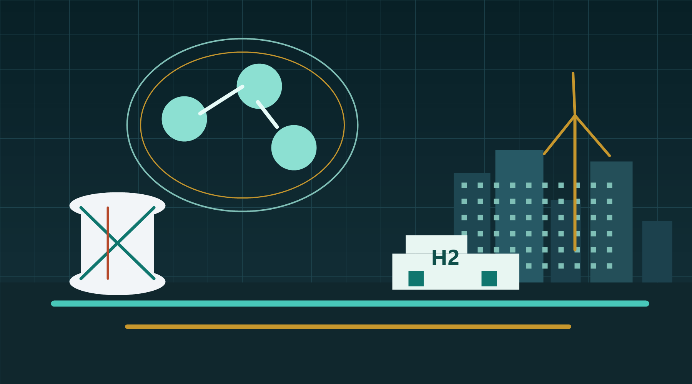

Channels guide hydrogen gas to the anode and oxygen from air to the cathode so the reaction happens across the membrane instead of randomly in open space.
Page 1
Hydrogen as an Element and Energy Carrier
Hydrogen is abundant in compounds such as water and hydrocarbons, but pure H2 has to be produced. That production pathway determines whether using it helps the climate or simply moves emissions upstream.
Fuel cell primer
How Hydrogen Becomes Useful Electricity
A fuel cell does not burn hydrogen. It separates hydrogen's protons and electrons, sends the electrons through an outside circuit, and recombines everything with oxygen to make water and heat.
The polymer electrolyte membrane lets H+ pass through, but blocks electrons. That forced separation is what creates useful electrical current.
Electrical current
Hydrogen gas
H2H2H2
Oxidant
O2O2O2
Anode
PEM
Cathode
H+
H+
e-
e-
H2O
Water + heat out
H2O
A catalyst splits hydrogen into protons and electrons: H2 -> 2H+ + 2e-. The protons cross the membrane.
Oxygen, protons, and returning electrons form water: 1/2O2 + 2H+ + 2e- -> H2O. This is why the tailpipe product is mainly water.
Figure takeaway: hydrogen's clean-use claim comes from electrochemistry, not from the molecule being automatically clean. The fuel cell can make electricity and water at the point of use, but the full climate result still depends on how the hydrogen was produced.
Simple atom, tricky molecule
Hydrogen has one proton and one electron. As H2, it is colorless, odorless, tiny, and eager to leak through weak points. Its small molecular size also makes material compatibility a major design issue.
Cryogenic, not casual
It only becomes liquid at deeply negative Celsius temperatures, around -253 C at atmospheric pressure. Condensing hydrogen is not itself an explosion, but boil-off gas can form flammable or explosive mixtures with air.
Flammable and hard to see
Hydrogen flames can be difficult to see, and a wide range of hydrogen-air mixtures can ignite. Safety is about ventilation, leak detection, compatible materials, pressure relief, and keeping ignition sources away.
Carrier, not primary source
Hydrogen stores energy made somewhere else. In a fuel cell, catalysts help split H2 so electrons can do useful work before recombining with oxygen to make water and heat.
Visual proof board
What Hydrogen's Properties Prove
The visuals below show why hydrogen is not automatically a clean fuel. It is a light, energy-rich carrier that needs cold, pressure, conversion equipment, and a clean production pathway before it becomes useful.
Liquid hydrogen needs extreme cold
-253 C
Room temp
This proves why liquid storage is not casual. The danger is not the cold liquid exploding by itself; the danger is boil-off gas warming, mixing with air, and finding an ignition source.
High energy by mass, low density by volume
Energy by massHigh
Energy by volume as gasLow
Storage complexityHigh
This is the core design tradeoff. Hydrogen can carry a lot of energy per kilogram, but a city must spend money and energy to compress, liquefy, or chemically carry enough of it.
How much original energy becomes hydrogen energy?
Grey can look efficient and cheap because the fossil supply chain already exists. Green has the strongest environmental case, but it spends clean electricity, so it should be aimed at uses where direct electrification is not enough.
Science layer
The Actual Chemistry Behind the Hydrogen Claim
Hydrogen is useful because chemical energy can be stored in the H-H bond and later released without carbon dioxide at the point of use. The difficult part is that pure H2 is not usually found ready to use, so another energy source must first separate hydrogen from water, methane, or coal-derived gases.
What H2 actually is
H + H -> H2
Two hydrogen atoms share electrons to form a stable H2 molecule. That bond stores chemical energy. When H2 reacts with oxygen in a fuel cell or flame, the atoms move into a lower-energy product, water, and the energy difference can become electricity, heat, or motion.
Electrolysis splits water
2H2O + electricity -> 2H2 + O2
Electrolysis forces water molecules apart. The electricity is not just a trigger; it becomes stored chemical energy in the hydrogen. Losses happen because real electrolysers have electrical resistance, heat, pumps, membranes, gas drying, and pressure requirements.
Steam reforming rearranges methane
CH4 + H2O -> CO + 3H2
CO + H2O -> CO2 + H2
Natural gas reforming does not create hydrogen from nothing. It moves hydrogen atoms from methane and steam into H2 while the carbon becomes CO2. Blue hydrogen adds carbon capture, but the science only helps the climate if methane leakage is low and captured CO2 stays stored.
Coal gasification makes syngas first
C + H2O -> CO + H2
Coal does not contain clean hydrogen waiting to be released. It must be gasified into a mixture of carbon monoxide and hydrogen, then shifted and purified. That chain uses heat, oxygen, cleanup systems, and separation equipment, which is why brown hydrogen has poor environmental value.
Molecular constants set the storage problem
2.016 g/molmolecular mass of H2
0.0838 kg/m3gas density at normal conditions
Hydrogen is light because each molecule has only two protons and two electrons. That gives it high energy per kilogram, but very low energy per litre as a gas. A kilogram of hydrogen contains useful chemical energy, yet at normal pressure it takes up about 12 cubic metres, so storage immediately becomes a pressure, temperature, and materials problem.
Energy content is measurable, not symbolic
1 kg H2 = about 33.3 kWh LHV
The lower heating value counts the usable energy when the water produced remains vapor. That number is why hydrogen attracts attention: one kilogram stores about as much chemical energy as one gasoline-gallon-equivalent. The catch is that the energy must first be put into H2 by electrolysis, reforming, or gasification, and each route loses part of the original input.
Electrolysis has a thermodynamic floor
Delta G = nFE; Erev about 1.23 V; Vtn about 1.48 V
Water splitting is not just "electricity touches water." The minimum reversible voltage is set by Gibbs free energy, and the thermoneutral voltage includes the heat of reaction. Real electrolysers run above the ideal voltage because of activation losses at catalysts, ohmic resistance in membranes, gas bubbles, pumps, drying, and controls. That is why stored H2 energy is always less than the electricity supplied.
Flammability depends on mixture and ignition
flammable in air: about 4% to 75% H2 by volume
Liquid hydrogen is difficult because its normal boiling point is about -253 C. The liquid itself is a cryogenic storage state; the combustion danger appears when hydrogen escapes, warms, mixes with air inside its flammable range, and reaches an ignition source. Safety design is therefore based on ventilation, leak detection, pressure relief, compatible materials, and preventing enclosed accumulation.
Narrative behind the facts
Why Hydrogen Is Powerful, Useful, and Awkward at the Same Time
The story begins with size
Hydrogen looks simple because the atom is simple: one proton, one electron, and very little mass. That simplicity is the reason hydrogen can carry a lot of energy per kilogram, but it is also the reason it is so difficult to use. The H2 molecule is small enough to escape through tiny openings that would hold larger fuels more easily. A city cannot treat hydrogen like gasoline, diesel, or natural gas without redesigning seals, valves, sensors, ventilation, and pressure systems. The promise and the problem come from the same physical fact: hydrogen is extremely light.
The storage problem is really a density problem
Hydrogen contains a lot of energy by mass, but very little energy by volume as a gas. That means a useful amount of hydrogen takes up too much space unless it is compressed, liquefied, or carried inside another chemical. Compression solves part of the volume problem but requires strong tanks and energy for compressors. Liquefaction makes hydrogen denser, but it requires cooling to about -253 C and keeping it cold. This is why storage is not just a container question. It is an energy, materials, cost, safety, and logistics question.
Flammability changes the design culture
Hydrogen is highly flammable across a wide mixture range in air, so the goal is not to pretend it is harmless. The goal is to design systems where leaks are detected quickly, gas cannot accumulate, pressure can be relieved, and ignition sources are controlled. Hydrogen flames can be hard to see, and leaks may rise quickly because the gas is so light. In practice, safe hydrogen systems rely on ventilation, separation distances, hydrogen-rated components, sensors, automatic shutdowns, and clear emergency procedures. The safety story is not that hydrogen cannot be used. It is that it has to be used with infrastructure built for its behavior.
The condensing question
Why liquid hydrogen feels dangerous
Liquid hydrogen is used where density matters, such as aerospace and some bulk transport. The cold is severe enough to embrittle materials and condense surrounding air if systems are poorly insulated. The main combustion risk comes when hydrogen escapes, warms, mixes with oxygen, and finds an ignition source.
- Compressed gas avoids cryogenic boil-off but needs strong, expensive vessels.
- Liquid storage improves volume density but spends a large share of hydrogen's energy on liquefaction.
- Any city-scale design needs sensors, ventilation, emergency venting, and hydrogen-rated materials.

Production story
The Color Labels Are Really Infrastructure Labels
Green hydrogen starts with electricity
Green hydrogen is the cleanest pathway because its fuel source is renewable electricity, not fossil carbon. The story is not just "water becomes hydrogen." The fuller story is that electricity first has to be generated, delivered to an electrolyser, converted into chemical energy, compressed or stored, and then delivered to a user. Each step spends money and loses energy. Green hydrogen is therefore most valuable when the electricity would otherwise be curtailed, when seasonal storage is needed, or when the final use cannot be electrified directly. Its sustainability is strong, but its energy budget has to be justified.
Grey and brown hydrogen show why price can mislead
Grey and brown hydrogen can look attractive because the fuel supply chains already exist. Grey hydrogen uses natural gas, and brown hydrogen uses coal or lignite. Those systems can produce hydrogen at lower direct cost in some regions because the infrastructure, workers, and feedstocks are already in place. The problem is that the cheap price usually leaves out climate damage, upstream methane leakage, coal mining impacts, carbon dioxide emissions, and the cost of eventually replacing the system. They are accessible pathways, but accessibility is not the same as long-term value.
Blue hydrogen is a transition argument
Blue hydrogen tries to keep the benefits of existing natural gas reforming while reducing emissions through carbon capture and storage. That makes it a bridge, not a final answer. It can be useful if the carbon capture rate is high, methane leakage is low, carbon dioxide storage is verified, and the project is close to industrial users. If those conditions fail, blue hydrogen can become grey hydrogen with extra cost and better branding. Its real value depends on measurement, not the color label.
Production tabs
Green, Grey, Blue, and Brown Hydrogen
The hydrogen molecule is the same in every tank. The color label describes how it was produced and how much carbon pollution is tied to that production.
Four-type model
How Each Hydrogen Type Becomes H2
The model follows the same chain for every type: input energy or feedstock, conversion equipment, carbon checkpoint, and final hydrogen output. The molecule is the same, but the pathway changes the price, emissions, and practicality.
H2
Renewable electricity model
- InputWind, solar, hydro, or other low-carbon electricity plus water.
- ConverterElectrolyser splits H2O into H2 and O2.
- Carbon checkpointNo direct CO2 from the reaction; cleanliness depends on the electricity source.
- OutputCleanest H2, but about 35-39% of input electricity is lost before storage.
CH4
Natural gas model
- InputMethane-rich natural gas, steam, and process heat.
- ConverterSteam methane reformer shifts hydrogen atoms into H2.
- Carbon checkpointCarbon from methane becomes CO2 and is released.
- OutputUsually cheap and easy to implement, but roughly 10-12 kg CO2e can be tied to each kg H2.
CO2
Gas plus capture model
- InputNatural gas plus carbon-capture equipment, CO2 compression, transport, and storage.
- ConverterReformer makes H2, then capture systems remove part of the CO2 stream.
- Carbon checkpointClimate value depends on capture rate, methane leakage, and verified storage.
- OutputLower-carbon than grey only when the whole gas-to-storage chain is measured strictly.
H2
Coal gasification model
- InputCoal or lignite reacted with oxygen and steam.
- ConverterGasifier makes syngas, then shift reactors and cleanup separate H2.
- Carbon checkpointCoal carbon produces the heaviest CO2 burden unless expensive capture is added.
- OutputAccessible in coal regions, but the weakest future-ready option environmentally.
Comparison visual
Which Hydrogen Type Wins on Each Measure?
This chart turns the color labels into measurable tradeoffs. The strongest pathway is not the one with the lowest sticker price; it is the one with the best mix of cost, emissions, energy kept, and buildability.
Best climate case, highest early cost
Cheapest access, weak climate case
Transition case, only if capture works
Coal access, worst total burden
Figure takeaway: the molecule is identical in every pathway, so the real comparison is upstream. Green wins on climate value, grey wins on near-term access, blue depends on measured carbon capture, and brown carries the weakest long-term case because coal emissions and cleanup dominate the full cost.
Renewable electrolysis
Green hydrogen is cleanest, but not always cheapest
Green hydrogen splits water using renewable electricity. It is the best climate pathway when the electricity is truly low-carbon, but electrolysers, clean power, storage, compression, and delivery make it expensive until manufacturing and demand scale up.
Affordability
Sustainability
Implementability
Energy kept into H2
Renewable electricity plus water. The hydrogen is only as clean as the electricity used to split the water.
Current PEM electrolysis is about 51-55 kWh per kg H2 at system level. One kg of H2 stores about 33.3 kWh LHV, so roughly 35-39% is lost before compression, storage, or final use.
Lowest climate impact, excellent fit for surplus solar and wind, useful for seasonal storage, steel, ammonia, ports, and fuel-cell fleets.
Financial cost is high today, environmental cost is low, and total energy expenditure is high enough that it should be saved for uses that direct electrification cannot handle well.
Process narrative: a green hydrogen project begins as an electricity project. The city first needs renewable power that is available at the right time, then water treatment, an electrolyser, compression, storage, and a final use. If clean power is scarce, using it to make hydrogen can be less sensible than sending that electricity directly to homes, heat pumps, or batteries. Green hydrogen becomes strongest when renewable power would otherwise be wasted, when energy needs to be stored for weeks or months, or when the final use needs a fuel molecule rather than electrons.
Natural gas without capture
Grey hydrogen is today's common fossil route
Grey hydrogen is usually made by steam methane reforming natural gas without carbon capture. It is widely used because the process is mature and relatively cheap, but it releases carbon dioxide upstream even if the final hydrogen use has no tailpipe emissions.
Affordability
Sustainability
Implementability
Energy kept into H2
Natural gas, mostly methane, plus high-temperature steam and process heat in steam methane reforming.
Roughly 65-75% of the fossil feedstock energy becomes hydrogen energy. Around 25-35% is lost as process heat, plant losses, and separation losses before compression, storage, or final use.
Cheapest and most accessible route in many regions, mature technology, large existing supply chain, and easy integration with refineries and chemical plants.
Financial cost is low, but environmental cost is high because CO2 is released and methane leakage can worsen total climate impact.
Process narrative: grey hydrogen became common because industry already had natural gas pipelines, reformers, skilled operators, and chemical customers that needed hydrogen. That makes it easy to implement and cheap on a plant balance sheet. The hidden problem is that the emissions happen before the hydrogen is used. A fuel-cell bus using grey hydrogen may have clean exhaust at the street, while the reformer releases carbon dioxide elsewhere. Grey hydrogen therefore solves supply and cost, but it does not solve the climate problem.
Natural gas plus carbon capture
Blue hydrogen is a bridge with leakage questions
Blue hydrogen uses fossil gas reforming with carbon capture, utilization, and storage. It can lower production emissions compared with unabated fossil hydrogen, but the result depends on methane leakage, capture rates, storage integrity, and whether clean hydrogen demand actually appears.
Affordability
Sustainability
Implementability
Energy kept into H2
Natural gas plus the added equipment, electricity, compression, transport, and storage needed for carbon capture and storage.
The reformer can be efficient, but capture and CO2 compression add an energy penalty. A planning range is about 55-70% energy kept and 30-45% lost before storage or final use.
Can cut emissions compared with grey hydrogen, uses familiar reforming equipment, and can scale faster in industrial hubs with CO2 pipelines and geologic storage.
Financial cost is medium to high, environmental value depends on high capture rates and low methane leakage, and total energy expenditure is higher than grey.
Process narrative: blue hydrogen is an engineering compromise. It keeps the natural gas reformer but adds carbon capture, CO2 compression, pipeline transport, and underground storage. That only works as a serious climate pathway when the whole chain is measured: methane leakage from gas production, capture rate at the plant, energy used by capture equipment, and long-term storage performance. Blue hydrogen can help an industrial region move faster than waiting for green hydrogen alone, but it is credible only when the carbon accounting is strict.
Coal gasification
Brown hydrogen is the cheapest-looking, dirtiest route
Brown hydrogen is usually made from lignite or coal gasification. It can look attractive where coal is cheap and infrastructure already exists, but it has the worst carbon profile and does not solve the climate problem unless paired with expensive capture and storage.
Affordability
Sustainability
Implementability
Energy kept into H2
Coal or lignite reacted with oxygen and steam to make syngas, then shifted and purified into hydrogen.
Coal gasification is energy intensive. A practical planning range is about 45-60% energy kept as hydrogen and 40-55% lost across gasification, cleanup, shifting, and separation before storage or final use.
It can use abundant coal resources and existing heavy-industry regions, but those benefits mostly apply where coal is cheap and climate costs are ignored.
Financial cost can appear moderate, but environmental cost is the highest. Total energy expenditure is poor when mining, gasification, cleanup, and emissions are counted.
Process narrative: brown hydrogen is the clearest example of why the word "hydrogen" is not automatically clean. Coal has to be mined, handled, gasified, cleaned, shifted, and separated before hydrogen is available. That chain uses a large amount of energy and produces heavy carbon pollution unless expensive capture is added. Brown hydrogen can make sense only to a system that already values coal access more than climate performance. For future infrastructure, it creates the largest risk of spending money on equipment that a low-carbon city will later need to replace.
| Type | Fuel or input | Energy transfer into H2 | Financial cost | Environmental cost | Accessibility and implementability | Overall benefit and cost |
|---|---|---|---|---|---|---|
| Green | Renewable electricity and water | About 51-55 kWh electricity per kg H2 today for PEM systems; about 35-39% lost before compression, storage, or final use. | High today, but likely to improve as electrolysers, renewables, and utilization scale. | Lowest if powered by additional clean energy; poor if it consumes grid power that still depends on fossil generation. | Medium. Needs clean power, electrolyser capacity, water treatment, interconnection, compression, and demand nearby. | Best total long-term option for hard-to-electrify uses; wasteful when used where batteries or direct electrification work well. |
| Grey | Natural gas, steam, and process heat | Roughly 65-75% of feedstock energy becomes H2; about 25-35% is lost before compression, storage, or final use. | Usually the cheapest route because the technology and gas supply chain are mature. | High. CO2 is released and methane leakage can raise total climate impact. | High. Existing refineries, chemical plants, gas lines, and reformers make it easy to deploy. | Strong short-term access, weak future value. It solves price and availability but not sustainability. |
| Blue | Natural gas plus carbon capture, CO2 compression, transport, and storage | Roughly 55-70% kept as H2 after capture penalties; about 30-45% lost before storage or final use. | Medium to high. Cheaper than green in some gas-rich regions, but more expensive than grey. | Conditional. Better than grey only when capture rates are high, methane leakage is low, and CO2 stays stored. | Medium to low. Works best in industrial hubs with nearby CO2 pipelines and geologic storage. | Useful bridge in the right geography; poor choice if it locks in fossil gas without strict carbon accounting. |
| Brown | Coal or lignite with oxygen and steam | Roughly 45-60% kept as H2; about 40-55% lost through gasification, cleanup, shift, and separation. | Moderate only where coal is cheap and emissions are not priced; capital equipment can be expensive. | Highest. Coal mining, gasification, and CO2 release create the heaviest environmental burden. | Medium in coal regions, low as a clean pathway because gasifiers, cleanup, ash handling, and capture are complex. | Lowest total benefit once environmental damage and energy waste are counted. |
Price examples
Three Place-Based Price Examples for Each Hydrogen Type
These are production-price examples in USD per kg H2. They are not retail pump prices, because compression, storage, delivery, station operation, and taxes can raise the final user price.
Basis: green examples use about 54 kWh of electricity per kg H2, then add electrolyser capital and operation. Fossil examples are anchored to published plant-gate cost cases: natural-gas reforming is lowest, natural gas with carbon capture is higher, and coal gasification is usually not low-cost once cleanup and carbon risk are counted.
Solar power can make the electricity portion cheap: 54 kWh/kg at 3 cents/kWh is about $1.62 before electrolyser capital, water treatment, and operation.
Low-carbon hydro can support cleaner hydrogen, but the price still depends on electrolyser utilization and whether clean power is available without displacing direct electrification.
Offshore wind and port demand help, but European power costs, land, permitting, and import-terminal infrastructure push the production price higher.
Natural gas reforming is cheap here because refineries, gas pipelines, hydrogen users, and chemical plants are already clustered.
Gas supply and industrial demand make grey hydrogen easy to produce, but the low price excludes the climate cost of uncaptured CO2.
Refining and petrochemical demand help implementation, while imported gas exposure can raise the production price compared with gas-rich regions.
Gas is available and CO2 storage is plausible, so the added cost mainly comes from capture equipment, CO2 compression, and storage verification.
Industrial hydrogen demand and carbon-storage planning make blue hydrogen more practical than in cities without gas or geologic storage.
Port-scale demand helps, but European gas costs, CO2 transport, permitting, and North Sea storage liability can raise the price.
Coal access and heavy industry can make coal gasification appear affordable, but the price does not include the full emissions burden.
Coal supply and industrial demand exist, but cleanup, ash handling, water use, and air-quality pressure raise the real project cost.
Coal-to-chemicals experience helps implementation, but carbon risk and cleanup costs weaken the long-term financial case.
Full report
Hydrogen as an Element, Fuel Type, and Energy Carrier
What properties make hydrogen useful and difficult?
Hydrogen is useful because it stores a large amount of energy by mass and can be converted into electricity inside a fuel cell without producing carbon dioxide at the point of use. That makes it attractive for vehicles, industry, backup power, and long-duration storage. However, hydrogen is also difficult because it is the smallest molecule, leaks easily, has low energy density by volume, and usually has to be compressed, liquefied, or chemically carried before it becomes practical. Its usefulness comes from the same properties that make it expensive: it is light, energetic, mobile, and hard to contain.
Why does liquid hydrogen raise safety and energy concerns?
Hydrogen becomes liquid only at extremely cold temperatures, around -253 C at atmospheric pressure. Reaching that state requires specialized cryogenic equipment and a major energy input, which can consume a large share of the hydrogen's stored energy. Liquid hydrogen is not explosive simply because it is cold, but any hydrogen that boils off, warms, leaks, and mixes with air can become flammable. A safe system therefore depends on insulation, ventilation, sensors, pressure relief, materials that tolerate cryogenic conditions, and designs that prevent hydrogen from collecting in enclosed spaces.
What fuels green, grey, blue, and brown hydrogen?
Green hydrogen is fueled by renewable electricity and water, using electrolysis to split water into hydrogen and oxygen. Grey hydrogen is fueled by natural gas, usually through steam methane reforming without carbon capture. Blue hydrogen also uses natural gas, but adds carbon capture, carbon dioxide compression, transport, and storage. Brown hydrogen is fueled by coal or lignite through gasification. The molecule produced is still H2 in every case, but the upstream fuel source determines the financial cost, environmental damage, infrastructure requirements, and long-term value.
How much energy is lost as input energy becomes useful hydrogen energy?
Hydrogen is not an energy source in the same way sunlight, wind, natural gas, or coal are energy sources. It is an energy carrier that must be made from another energy input. Here, transfer means the energy pathway from the original input into stored hydrogen and then into final use, not simply moving hydrogen between places. Green hydrogen often keeps about 61-65% of the input electricity as hydrogen energy before compression or liquefaction. Grey hydrogen can keep roughly 65-75% of the fossil feedstock energy, but it releases carbon dioxide. Blue hydrogen keeps less because carbon capture adds energy penalties. Brown hydrogen is generally the weakest because coal gasification, cleanup, shifting, and separation can lose a large share of the original energy while producing high emissions.
Which type has the best overall benefit?
Green hydrogen has the strongest long-term environmental value, but it is expensive and energy-intensive, so it should be used where direct electrification is difficult. Grey hydrogen is accessible and relatively cheap, but it fails the sustainability test because emissions are uncaptured. Blue hydrogen can be useful as a transition option if methane leakage is low, carbon capture is high, and carbon dioxide storage is verified. Brown hydrogen has the weakest total case because its apparent cost advantage depends on ignoring high environmental damage. Overall, hydrogen is most beneficial when the production pathway is low-carbon and the end use truly needs hydrogen's storage, range, heat, or chemical advantages.
Sources
Research Anchors
These are not decorative links. Each card explains which claim the references support, so the report's numbers and conclusions can be traced back to evidence.
Hydrogen is an energy carrier, not a primary source.
DOE explains that hydrogen stores, moves, and delivers energy made from other sources, and that today's common pathways include natural gas reforming and electrolysis.
DOE hydrogen fuel basicsElectrolysis loses energy before storage begins.
DOE's PEM electrolysis target table lists system energy use around 55 kWh per kg H2 at 2022 status, compared with hydrogen's lower-heating-value energy of about 33.3 kWh per kg.
DOE PEM electrolysis targetsLow volume density drives pressure and cryogenic design.
DOE storage data supports the site's explanation that compressed tanks, 350-700 bar storage, and liquid hydrogen near -252.8 C are engineering choices caused by hydrogen's low density.
DOE hydrogen storageLow-emissions hydrogen is growing, but still small.
IEA's 2025 review supports the report's cautious tone: hydrogen demand is large, but low-emissions supply remains a small share and cost, demand, and infrastructure are still barriers.
IEA Global Hydrogen Review 2025
IEA Global Hydrogen Review 2025
IEA hydrogen trade and infrastructure
IEA hydrogen infrastructure overview
DOE hydrogen delivery
DOE Hydrogen Program delivery
DOE H2A delivery analysis
DOE hydrogen production pathways
DOE natural gas reforming
DOE PEM electrolysis targets
DOE physical hydrogen storage
EIA hydrogen production overview
DOE AFDC fuel cell electric vehicles
DOE fuel cell basics
Toyota Mirai current model
Honda CR-V e:FCEV
Hyundai all-new NEXO
City of Edmonton hydrogen bus pilot
Mississauga hydrogen bus initiative
Mississauga hydrogen ecosystem
Toyota Woven City official launch
Toyota and ENEOS Woven City hydrogen plan
Toyota portable hydrogen cartridges
Argonne hydrogen safety requirements
American Physical Society fuel cell history
NASA fuel cell commercialization history
National Grid hydrogen color spectrum
NETL hydrogen production technologies
H2Tools comparative properties
H2Tools hydrogen heating values
Washington State HYPER Lab liquefaction note
DOE hydrogen energy storage analysis